Desarrolladora de Smalltalk, precursor de la computación personal
Ilustraciones por Emilio Rodríguez.
Textos por Libertad Pozos.
Goldberg es una empresaria e informática estadounidense que formó parte del equipo de desarrollo del entorno de objetos y lenguaje de programación orientado a objetos Small Talk. Además, Goldberg ha estado a la cabeza de distintas empresas como ParcPlace Systems, Neometron y Verton. Entre sus muchos proyectos de consultoría, ha diseñado sistemas para crear e impartir cursos en línea destinados a mejorar la equidad y el alto rendimiento en matemáticas y ciencias en la escuela secundaria.
Goldberg nació en Cleveland, Ohio pero vivió gran parte de su infancia y adolescencia en Chicago. Estudió matemáticas en la Universidad de Michigan. El interés de Goldberg por la informática empezó en un viaje que hizo por Europa en donde vio varios edificios de IBM. Tras el viaje, decidió que podría aprender algo que IBM requiriera y así poder vivir en cualquier parte del mundo. Por lo tanto,tendría que aprender más sobre computadoras. Empezó a trabajar en el Centro de Investigación de Aprendizaje y Enseñanza (CRLT por sus siglas en inglés) de la Universidad de Michigan en donde descubrió que la programación y la resolución de problemas le apasionaba.
Obtuvo su doctorado en Informática en la Universidad de Chicago en 1973. Goldberg empezó ese mismo año a trabajar en el Centro de Investigación Xerox en Palo Alto, California (PARC, por sus siglas en inglés). Ahí, formó parte del en el Grupo de Investigación de Aprendizaje (LRG, por sus siglas en inglés), junto con Alan Kay, que desarrolló SmallTalk.
Smalltalk estaba compuesto por un lenguaje de programación, un entorno de desarrollo y una interfaz gráfica de usuario, que se ejecutaba en la innovadora computadora Alto de PARC. Smalltalk fue pionero en la superposición de ventanas, menús emergentes y navegadores panorámicos, todos controlados por un ratón. Todos estos elementos de interfaz han llegado hasta nosotros hoy en día a través de sistemas como el Macintosh y Microsoft Windows. Smalltalk fue también uno de los primeros y más influyentes lenguajes de programación orientados a objetos, que constituyen el tipo de lenguaje de programación más dominante hoy en día.
En 1988 Goldberg cofundó la empresa ParcPlace Systems. Goldberg se desempeñó como CEO y Presidenta de la compañía. En ParcPlace Systems creó herramientas de desarrollo para aplicaciones basadas en Smalltalk. Después de dejar ParcPlace Systems en 1995, Goldberg estableció una consultoría.
Goldberg fue presidenta de la Maquinaria de Computación (ACM, por sus siglas en inglés). Asimismo, ha ganado distintos premios a lo largo de su carrera entre los que se encuentran el Premio de Sistemas de Software de ACM con Alan Kay y Dan Ingalls y el premio Lifetime Achievement Award de PC Magazine.